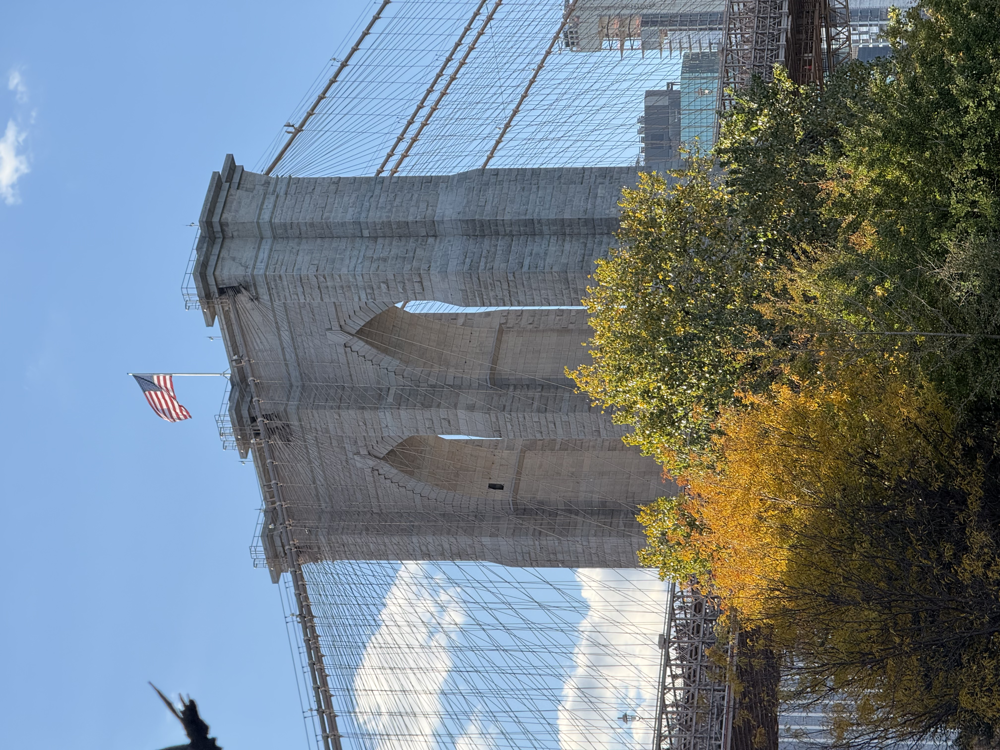
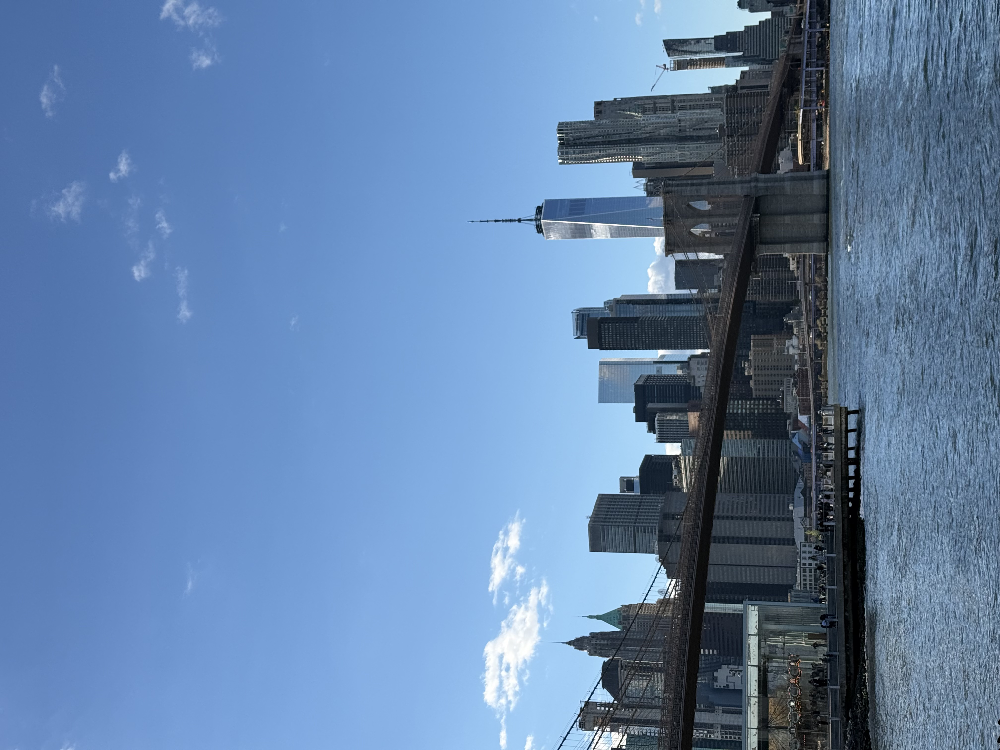
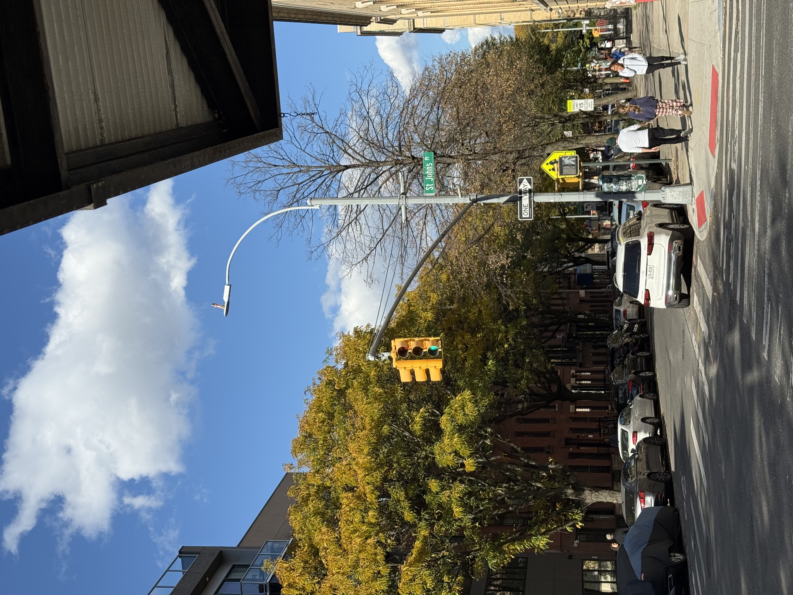
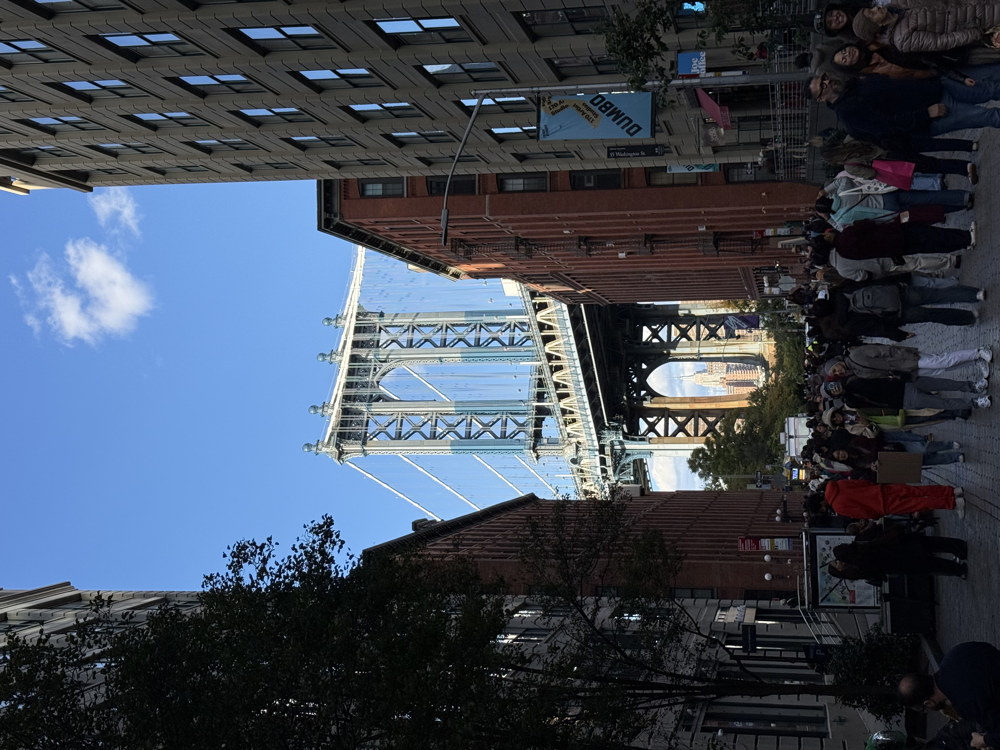
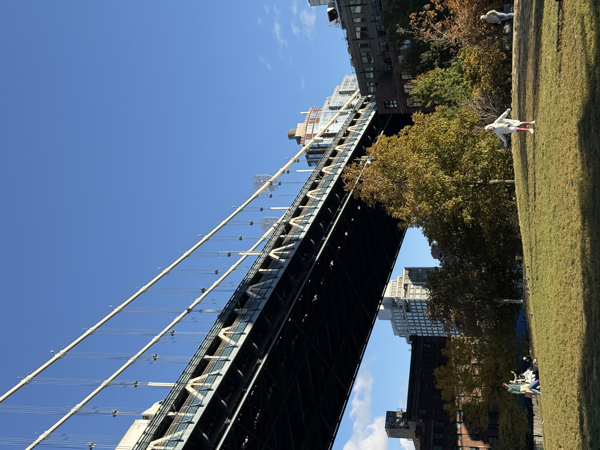

← Back to Gallery


New York
New York Street
2025-10-26
Trees with yellow leaves on the streets of New York.
Tree City View
2025-10-26
Beneath a tree by the seaside, with a view of the city skyline.

Brooklyn Bridge
2025-10-26
In front of the Brooklyn Bridge stands a tree with yellow leaves.
Manhattan Building at Sunset
2025-10-26
The building's glass reflects the sky.

Brooklyn Bridge View
2025-10-26
The Brooklyn Bridge and the distant cityscape.
New York Street
2025-10-26
The leaves on the trees along the streets of New York have all turned yellow.


Dumbo Brooklyn Bridge
2025-10-26
The Brooklyn Bridge at the popular photo spot in Dumbo.
Dumbo Park
2025-10-26
Next to Dumbo, in the park beneath the bridge, many people are out for a stroll.

Yellow Fallen Leaves
2025-10-26
Yellow fallen leaves and trees on a street beside Dumbo.
Tree Under the Building
2025-10-26
A building viewed from below, seen through the trees.